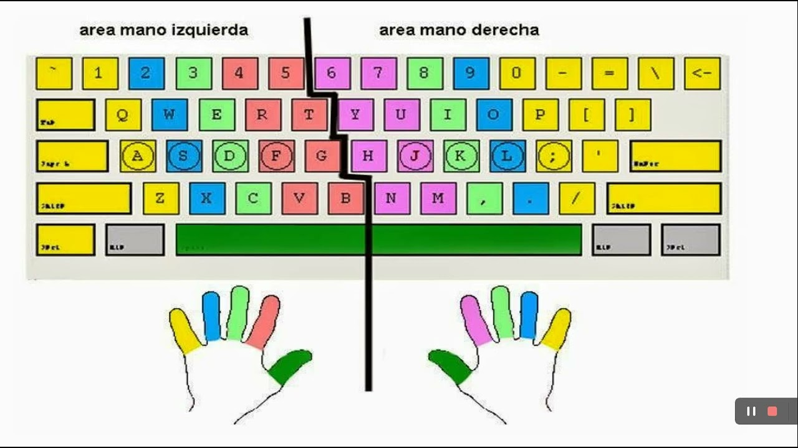

Destreza del Teclado: Clave para la Productividad
La velocidad y precisión al escribir en el teclado son habilidades que, una vez adquiridas, les ahorrarán incontables horas de trabajo. No se trata solo de escribir rápido, sino de hacerlo sin mirar el teclado, lo que les permite concentrarse en el contenido.
La mecanografía al tacto (o "touch typing") es la capacidad de escribir sin mirar el teclado, utilizando todos los dedos de ambas manos. Esto no solo aumenta la velocidad, sino que también mejora la ergonomía y reduce la fatiga.

Beneficios de la Mecanografía al Tacto
- Velocidad Incrementada: Escribirás mucho más rápido.
- Precisión Mejorada: Menos errores al escribir.
- Mejor Enfoque: Puedes concentrarte en tus ideas, no en encontrar las teclas.
- Ergonomía: Reduce la tensión en cuello y ojos.
- Profesionalismo: Es una habilidad valorada en muchos entornos laborales.
Ejercicios Prácticos
La práctica constante es clave. Dedica al menos 15-30 minutos diarios a ejercicios de mecanografía. Existen muchas herramientas online gratuitas que puedes utilizar:
Comienza enfocándote en la precisión sobre la velocidad. La velocidad vendrá con la práctica y la memoria muscular.
Más Consejos
Recuerda mantener una postura correcta: espalda recta, pies apoyados en el suelo y muñecas flotando ligeramente sobre el teclado, sin apoyarlas. Evita la tentación de mirar el teclado, incluso si al principio escribes más lento. Con el tiempo, tus dedos aprenderán la ubicación de cada tecla por memoria muscular.
Utiliza software de mecanografía que te proporcione retroalimentación sobre tu precisión y velocidad. Establece metas pequeñas y celebra tus progresos. ¡La perseverancia es tu mejor aliada en este aprendizaje!